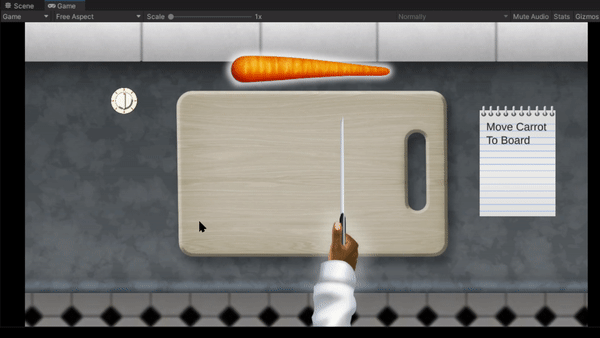

Woven Together
Woven together is a 2D cooking simulator inspired to Cooking Mama.

Responsibilities:
• Scripting
• Shader Programming
• Gameplay Design
• Program Architecture.
Highlight:
Creating a custom shader to creating the slicing effect of the vegetables. fairly simple shader that will change the portion of the UV being drawn based on where the vegetable is sliced.